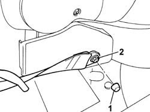
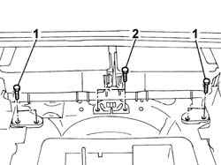
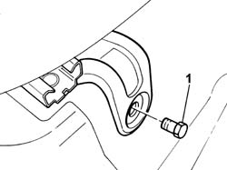

7050C05 Single sliding REAR SEAT with split folding squab - R.R .
- Path
- Procedures > 70 FITTINGS > 7050 REAR SEATS > 7050C SLIDING REAR SEATS > 7050C05 Single sliding REAR SEAT with split folding squab - R.R .
- Kind
- repair procedure (removal / refitting; the operation number is the code)
- Applies to
- all engines; all production periods
- Interactive page
- https://sloeber94.github.io/elrnDB-fPnd/en/#/2753289
Applies to: all engines; all production periods
 Removing
Removing
 Refitting
RefittingPlace the sliding rear seat in the forwards end of travel position.
Fold the backrest over using the release devices.
1. Remove the seat belt cover which is a press fit.
2. Undo the bolt fixing the rear seat belt to the seat.
Carry out the same operation on the opposite side.

Applies to: all engines; all production periods
1. Undo the rear bolts fixing the sliding guides to the floor.
2. Undo the bolts fixing the centre attachment and sliding device.

Applies to: all engines; all production periods
Move the single sliding rear seat backwards.
1. Undo the front bolts fixing the seat to the floor.
Remove the one-piece sliding rear seat passing it through one of the rear door housings.
With the seat at the bench, release the sliding and attachment device from the housing on the seat frame.

Applies to: all engines; all production periods
Refitting
RemovingFit the one-piece sliding rear seat, passing it through one of the rear door housings and tighten the front and rear fixing bolts to the floor,.
Working from the luggage compartment, fit the centre sliding and attachment device in the housing on the seat frame.
Screw in the bolts fixing the centre sliding and attachment device without tightening them.
Tighten the bolts fixing the centre attachment and sliding device to torque.
 | Fastening | Component | Ø | Value (daNm) |
|---|---|---|---|---|
- | Bolt | CENTRE REAR SEAT SUPPORT/GUIDE. | M10 x 1.25 | (Front) 4.0 |
Tighten the rear bolts fixing the one-piece rear seat to the floor to torque.
| Fastening | Component | Ø | Value (daNm) |
|---|---|---|---|---|
- | Bolt | Sliding one-piece REAR SEAT | M10 x 1.25 | (Rear) 4.0 |
Tighten the front bolts fixing the one-piece seat to the floor to torque.
| Fastening | Component | Ø | Value (daNm) |
|---|---|---|---|---|
- | Bolt | Sliding one-piece REAR SEAT | M10 x 1.25 | (Front) 4.0 |
Tighten the bolts fixing the rear seat belts to the rear seat cushion to torque.
Fit the covers which are a press fit.
Raise the backrest and check that the attachment device is secured to the striker.
Topics linked from this page (1)
Topics that link to this page (8)
- 7050A15 SPLIT rear. seat RIGHT BACKREST- R.R.
- 7050A63 Rear seat/ backrest. - movement control LEVERS R.R.
- 7050A67 Rear seat sliding control DEVICE from luggage compartment - R.R.
- 7050A74 Rear seat BACKREST locking/release CABLE - R.R.
- 7050A75 Rear seat sliding control CABLE - R.R.
- 7050C11 Single CUSHION of sliding rear seat - S.R.
- 7050C21 COVER of sole cushion of sliding rear seat - R.R.
- 7065B15 ANCHORAGE ROD for one rer seat belt. on sliding rear seat frame , (one) left or right - R.R.